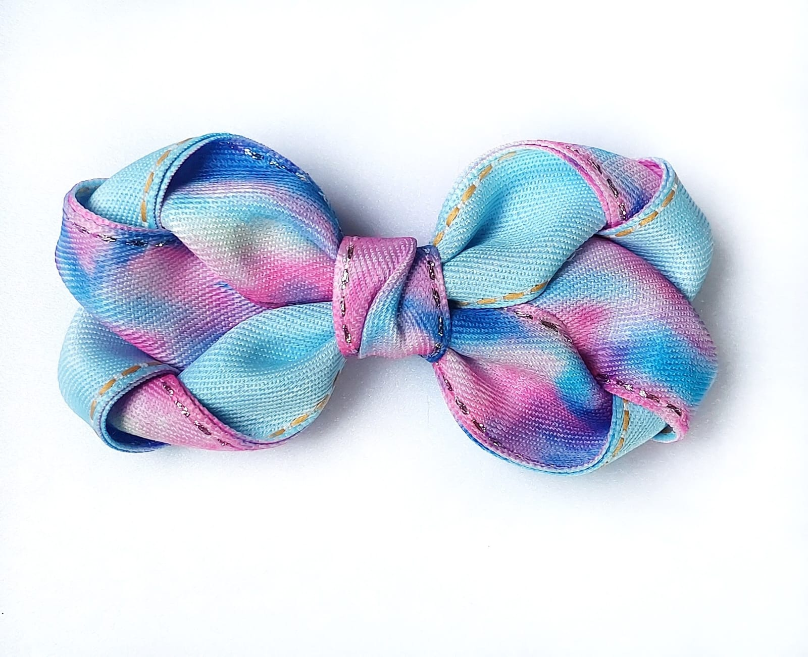

Laço Lúcia Tie Dye
Laço em jeans tie dye tamanho G com aplicação em bico de pato.
Quantidade: Unidade.
Bico de pato encapado e com borrachinha antideslizante.
Disponível também na faixinha slim.(Solicitar no final da compra).
R$24,00
Comprar